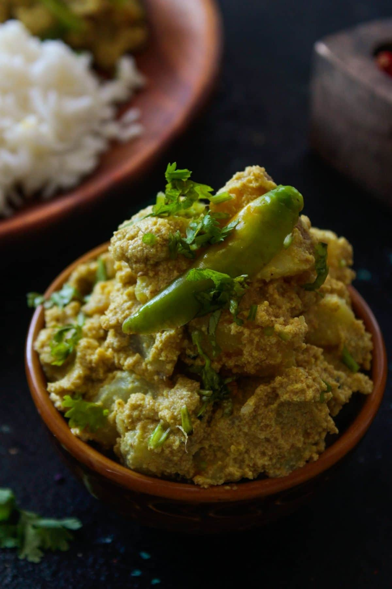

Aloo Posto Recipe
This is a Bengali dish that I learned and
perfected since marrying my husband. This is one of his
favorite dishes to eat when feeling homesick.
It's always an honor to serve some comfort in a bowl
with homemade naan on the side.
With food comes language, here you'll learn that Aloo
in Bangla means potato, a very important vegetable
in my life, and posto means white poppy seed.
That's exactly what this recipe entails.
Simple and delicious.
Ingredients
- 2 tablespoons posto (white poppy seeds)
- 1/4 cup water (for soaking the posto)
- 1 green chilli (optional, if you enjoy spice!)
- 2 large potatoes
- 2 tablespoons of mustard oil
- 1/2 teaspoon nigella seeds (optional)
- 1/4 teaspoon tumeric powder
- 2 green chillis (optional)
- salt to taste
- 1/2 to 2/3 cups of water or add as needed
- 1/4 teaspoon sugar (optional)
Instructions
Making Poppy Seeds Paste
- Soak the poppy seeds in ¼ cup water for 3 to 4 hours or overnight .
If you forget soaking , then soak in lukewarm water for an hour or so.
- After overnight soaking, use a fine mesh strainer and drain all the water.
- Add the poppy seeds in a small chutney grinder.
- Add 1 green chili and 1 tablespoon water.
- Grind to a fine paste. Add more water if needed while grinding the soaked poppy seeds.
Making Aloo Posto
- Next rinse, peel, and cut the potatoes into pieces measuring 1 to 1.25 inches.
- Heat mustard oil in a pan or kadai (wok) and let it gently smoke on a medium heat.
- Lower the heat and add ½ teaspoon nigella seeds (kalonji).
- Stir and saute the nigella seeds for a few seconds.
- Add the chopped potatoes. Stir to combine and mix the potatoes evenly with the mustard oil and nigella seeds.
- On low heat, sauté the potatoes, stirring occasionally, until they are halfway cooked or exhibit a faint golden hue at the edges.
- Next sprinkle turmeric powder all over the potatoes. Turmeric is an optional ingredient.
- Stir and mix well.
- Add the poppy seeds paste and two whole green chilies.
Scrape of all the poppy seeds paste from the grinder jar and add. You can even rinse the jar with some water and then add the water in the pan.
- Mix thoroughly to combine all the ingredients.
- Next add ½ to ⅔ cup water.
The amount of water required depends on the consistency you want. Usually aloo posto has a dry to semi-dry consistency, but for a gravy consistency you can add some more water.
- Stir and mix very well.
- Season and salt and mix again.You can also add sugar if you prefer.
- Cover the pan with a lid and on a low heat simmer till all the water dries up and the potatoes are cooked. The poppy seeds paste will also cook by then. Do not over cook the potatoes. DO check a couple of times when the potatoes are cooking.
- The consistency should be dry and there should be no water in the pan. The poppy seeds paste will coat the potatoes.
- While serving you can place some fresh green chillies if want it as a garnish or serve aloo posto as is with some naan.